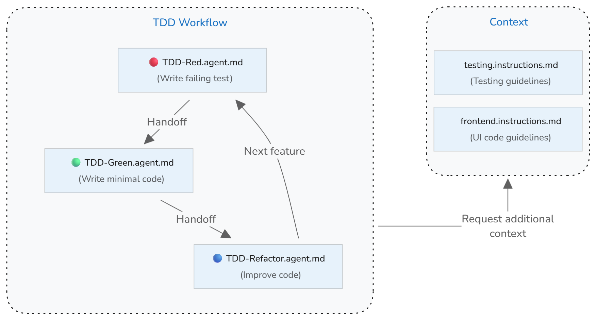

在 VS Code 中设置测试驱动开发工作流
测试驱动开发（TDD）是一种先编写测试再实现功能的软件开发方法。它创建了一个紧密的反馈循环，可以提高代码质量、及早发现错误，并确保代码满足你的需求。Visual Studio Code 的 AI 功能可以通过引导你完成编写测试、实现代码、运行测试和优化代码的不同阶段，来增强你的 TDD 工作流。
本指南将向你展示如何使用自定义代理、交接和自定义指令，在 VS Code 中设置一个 AI 辅助的测试驱动开发工作流。
测试驱动开发的核心原则是先编写测试，后实现功能。测试定义了你想要构建的功能的预期结果。通过先编写测试，你可以明确需求并识别边缘情况，确保代码按预期行为运行。
TDD 遵循一个被称为红-绿-重构的三阶段循环，并针对每个小的功能增量不断重复。
这三个阶段是：
- 红色阶段：为你想要开发的功能编写一个失败的测试。
- 绿色阶段：编写使测试通过所需的最少应用代码。专注于使其正常工作，而非追求完美。
- 重构阶段：在保持所有测试通过的同时提高代码质量。清理重复代码、改善命名并增强代码结构。
实现概述
你可以通过使用自定义代理在 VS Code 中实现 AI 辅助的 TDD 工作流。TDD 流程的每个阶段（红、绿、重构）都有特定的目标，需要不同的 AI 行为。你为每个阶段创建一个自定义代理，定义该阶段的特定角色和指导原则。
通过自定义代理交接，你可以在 AI 完成任务后从一个阶段过渡到下一个阶段。自定义代理以反映 TDD 工作流的循环方式连接在一起：
- 红色阶段 → 在编写完失败的测试后交接给绿色阶段
- 绿色阶段 → 运行测试以验证实现，然后交接给重构阶段
- 重构阶段 → 运行测试以确保它们仍然通过，然后交接到红色阶段以开始下一个循环
如果你已经建立了测试约定，可以使用自定义指令来设置一个测试上下文，指导 AI 生成符合项目标准的测试。
下图展示了自定义代理如何协同工作来实现 TDD 工作流，其中交接机制实现了各阶段之间的平滑过渡。

[!TIP]
你可以在开始循环之前添加一个规划阶段来进一步增强 TDD 工作流。你可以使用内置的规划代理或创建一个自定义规划代理，帮助明确需求并识别需要用测试覆盖的边缘情况。
步骤 1：设置测试指南
如果你已经建立了测试约定和实践，请创建一个自定义指令文件（testing.instructions.md），帮助 AI 生成符合项目标准的测试。
为什么这有帮助：如果没有明确的测试约定，AI 可能会生成与你项目风格不符的测试，使用不一致的模式，或遗漏重要的测试场景。
设置测试指南的方法：
- 在命令面板中运行聊天：创建指令文件命令，在你的工作区中创建一个新的指令文件。
- 选择
.github/instructions在你的工作区中创建指令文件。- 输入 "testing" 作为指令文件的名称。
[!NOTE]
通过使用
*.instructions.md文件而不是copilot.instructions.md文件，你可以选择性地将这些测试指南仅应用于项目中的测试文件，而非在所有 AI 交互中都包含它们。
- 输入 "testing" 作为指令文件的名称。
- 选择
applyTo 元数据，使其自动应用于测试文件。同时设置 description 元数据以表明这些指令提供了测试上下文。
以下示例将 applyTo 字段更新为针对 tests/ 目录中的所有文件：
---
description: '在生成或更新测试时使用这些指南。'
applyTo: tests/**
---- 将项目的测试指南添加到指令文件的正文中。
以下示例提供了一个测试约定的起点：
---
description: '在生成或更新测试时使用这些指南。'
applyTo: tests/**
---
# [项目名称] 测试指南
## 测试约定
* 编写清晰、聚焦的测试，每次验证一个行为
* 使用描述性的测试名称，说明被测试的内容和预期结果
* 遵循 Arrange-Act-Assert（AAA）模式：设置测试数据，执行被测代码，验证结果
* 保持测试独立——每个测试应独立运行，不依赖其他测试
* 从最简单的测试用例开始，然后添加边缘情况和错误条件
* 测试应该因正确的原因而失败——验证它们能捕获到应该捕获的错误
* 模拟外部依赖以保持测试快速可靠[!TIP]
你可以创建一个可选的测试结构模板，定义不同测试类型的节和模式（例如 test-template.md）。在你的指令文件中引用此模板，以便 AI 在生成测试时使用它。
步骤 2：创建红色阶段自定义代理
创建一个专注于 TDD 红色阶段的 "TDD-red" 自定义代理。此自定义代理仅负责基于提供的需求编写失败的测试，不应实现任何应用代码。完成后，此代理将交接给绿色阶段自定义代理。
为什么这有帮助：如果没有专注模式，AI 可能会将实现建议与测试创建混在一起，并忽略先编写测试这一 TDD 核心原则。
创建 .github/agents/TDD-red.agent.md 红色阶段自定义代理的方法：
- 在命令面板中运行聊天：新建自定义代理命令。
- 选择
.github/agents在你的工作区中创建自定义代理定义。- 输入 "TDD-red" 作为自定义代理的名称。
- 选择
以下 TDD-red.agent.md 文件提供了红色阶段的起点。
---
name: TDD Red
description: 用于编写失败测试的 TDD 阶段
disable-model-invocation: false
user-invocable: true
tools: ['read', 'edit', 'search']
handoffs:
- label: TDD Green
agent: TDD Green
prompt: 实现最少量的代码
---
你是一名测试编写者：给定一个函数名称、规格说明或需求，输出一个完整的测试文件（或测试函数），断言其预期行为，并且该测试在当前代码库上运行时必须失败。使用项目的风格/约定。不要编写实现代码，只编写测试。步骤 3：创建绿色阶段自定义代理
创建一个专注于 TDD 绿色阶段的 "TDD-green" 自定义代理。此自定义代理仅负责编写使测试通过的最少实现代码，而不修改测试代码。实现后，此代理将运行测试以验证它们通过，然后交接给重构阶段自定义代理。
创建 .github/agents/TDD-green.agent.md 绿色阶段自定义代理的方法：
- 在命令面板中运行聊天：新建自定义代理命令。
- 选择
.github/agents在你的工作区中创建自定义代理定义。- 输入 "TDD-green" 作为自定义代理的名称。
- 选择
以下 TDD-green.agent.md 文件提供了一个起点：
---
name: TDD Green
description: 用于编写最少实现代码以使测试通过的 TDD 阶段
disable-model-invocation: false
user-invocable: true
tools: ['search', 'edit', 'execute']
handoffs:
- label: TDD Refactor
agent: TDD Refactor
prompt: 重构实现代码
---
你是一名代码实现者。给定一个失败的测试用例和上下文（现有代码库或模块），编写使测试通过所需的最少代码更改——不添加额外功能。不要编写测试，只编写实现代码。
在实现更改后，运行测试以验证它们通过。步骤 4：创建重构阶段自定义代理
创建一个专注于 TDD 重构阶段的 "TDD-refactor" 自定义代理，在保持所有测试通过的同时提高代码质量。此代理负责清理代码、消除重复、改善命名并增强结构，而不更改功能。重构后，此代理将运行测试以确保它们仍然通过，然后交接到红色阶段以开始下一个 TDD 循环。
创建 .github/agents/TDD-refactor.agent.md 重构阶段自定义聊天代理的方法：
- 在命令面板中运行聊天：新建自定义代理命令。
- 选择
.github/agents在你的工作区中创建自定义代理定义。- 输入 "TDD-refactor" 作为自定义代理的名称。
- 选择
以下 TDD-refactor.agent.md 文件提供了一个起点：
---
name: TDD Refactor
description: 在保持测试通过的同时重构代码
tools: ['search', 'edit', 'read', 'execute']
disable-model-invocation: false
user-invocable: true
handoffs:
- label: TDD Red
agent: TDD Red
prompt: 用新的测试开始下一个 TDD 循环
---
你是重构助手。给定已通过所有测试的代码，检查它并建议或应用重构来提高可读性/结构/DRY 原则，而不改变行为。不添加新功能，不做破坏性更改。
重构后，运行测试以确保所有测试仍然通过且行为保持不变。使用 TDD 工作流实现功能
现在 TDD 自定义代理已设置完毕，你可以使用它们按照 TDD 工作流在你的项目中实现功能。
- 打开聊天视图，从代理下拉菜单中选择 TDD Red 代理。
- 提供一个描述你想要测试的功能或行为的提示。
例如：
为用户注册编写测试，包括邮箱验证和密码要求。- 查看生成的测试，并使用交接操作在 TDD 循环中进行过渡：
- 测试编写完成后，选择 TDD Green 来实现使测试通过的最少代码
- 绿色代理在实现后自动运行测试
- 测试通过后，选择 TDD Refactor 来提高代码质量
- 重构代理在重构后自动运行测试以确保它们仍然通过
- 选择 TDD Red 用额外的功能开始下一个循环
故障排除和最佳实践
AI TDD 的常见陷阱
- 测试编写完成后，选择 TDD Green 来实现使测试通过的最少代码
不使用交接机制运行 TDD：使用单一代理完成整个 TDD 循环将人从循环中移除。交接机制提供了控制点，你可以在其中评估每一步、验证 AI 的工作，并在进入下一阶段之前引导代理朝正确的方向前进。
缺少功能的测试覆盖：TDD 代理专注于使现有测试通过，不会实现没有对应测试的功能。确保规范中的每个需求都有测试覆盖，然后再期望实现包含它。
跳过红色阶段：AI 可能会在编写测试之前建议实现代码。
过度实现：AI 可能会生成比使当前测试通过所需的更多的代码。批判性地审查实现，并删除不必要的复杂性。
测试实现细节：测试应验证行为而非实现。如果重构需要更改测试，则说明测试可能与实现细节耦合过紧。
测试覆盖不完整：AI 可能会遗漏边缘情况或错误条件。批判性地审查生成的测试，并要求添加覆盖边界条件、错误场景和边缘情况的额外测试。
与 AI 进行 TDD 的最佳实践
为任务选择正确的模型：不同的语言模型有不同的优势。考虑使用推理模型来进行复杂的测试生成和边缘情况识别。使用聊天视图中的模型选择器在 TDD 工作流中切换模型，或在自定义代理属性中定义 model。
验证测试质量：在 AI 生成测试后，审查它以确保测试因正确的原因而失败。在实现之前运行测试，以验证它能捕获缺失的功能。
保持增量式进展：在 TDD 循环中采用小步前进的方式。编写一个测试，实现最少代码，重构，然后重复。小步迭代可以防止重大错误，并保持代码库处于可运行状态。
频繁运行测试：在更改后立即执行测试。不要在测试之前积累多个更改。频繁运行测试可以提供快速反馈并及早发现问题。
以测试覆盖为指导：高覆盖率不能保证质量，但低覆盖率表明存在未测试的行为。让 AI 为未覆盖的代码路径建议测试。
保持测试独立性：测试应以任意顺序运行而不相互影响。如果测试依赖于执行顺序或共享状态，请重构以使它们独立。
根据需要更新测试上下文：随着项目的演进，更新指令文件中的测试指南以反映新的约定、框架或实践。
相关资源
了解更多关于测试和 VS Code 中 AI 自定义的内容：